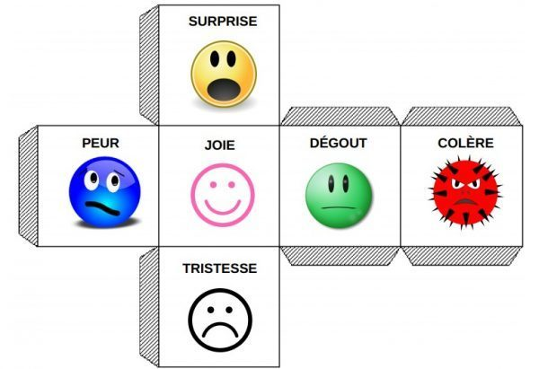

Introduction générale
Plusieurs films de science-fiction ont marqué nos esprits. On peut citer par exemple le film
Wall-E de
Andrew Stanton et le film
I. Robot avec Will Smith. Ces oeuvres, mêlant fiction et
réalité, incarnent la vie future où le robot a sa place à part entière dans la vie quotidienne.
Les robots sont à l'image de l'humain tant sur le plan physique que sur le
plan des compétences (raisonnement, mémoire, conscience ...) et surtout possédant
des émotions. Ce genre de film nous fait voyager dans le futur, laissant supposer la
possibilité d'une parfaite coopération homme-machine, où le robot est capable d'exprimer
ou de prendre en compte les émotions de l'homme. Aujourd'hui cet aspect
de la fiction n'est pas aussi loin qu'on ne l'imagine de la réalité. En effet, plusieurs
travaux de recherche se penchent sur l'intégration d'une dimension émotionnelle
dans les personnages virtuels ou les robots, afin d'apporter une illusion de vie aux
utilisateurs, mais aussi améliorer l'interaction humain-machine.
Généralement, les études portent sur des émotions primaires telles que la joie,
la tristesse, la peur, etc. Mais en réalité, et dans la vie de tous les jours, les émotions
sont souvent complexes et impliquent plusieurs émotions simultanées. Elles
surviennent par exemple comme une succession rapide d'émotions, une superposition,
une émotion masquée, supprimée ou au contraire exagérée. Par exemple, on
peut ressentir un mélange de tristesse et de colère suite à une expérience de trahison
par un ami ou un sentiment mixte de peur et de colère suite à une injustice infigée
par son patron.
